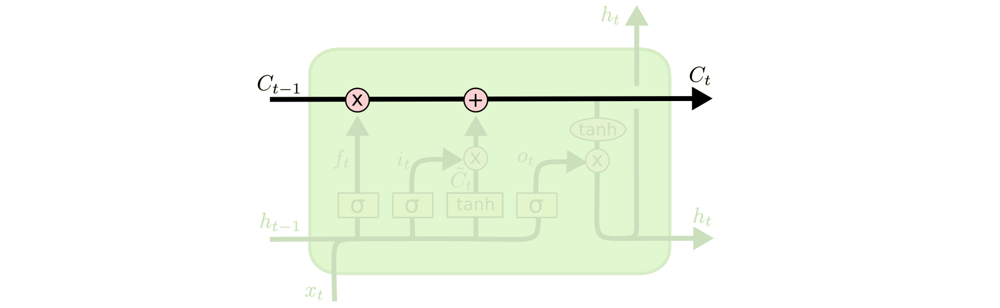
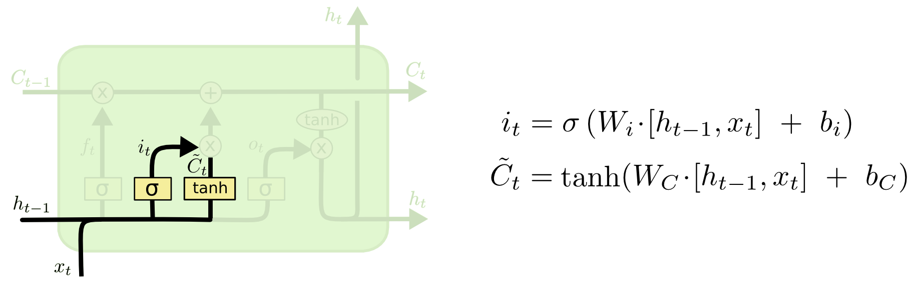

Jaringan Saraf Berulang (Recurrent Neural Networks)
Manusia tidak memulai pemikirannya dari nol setiap detik. Saat Anda membaca esai ini, Anda memahami setiap kata berdasarkan pemahaman Anda atas kata-kata sebelumnya. Anda tidak membuang semuanya lalu mulai berpikir dari awal lagi. Pikiran Anda memiliki kesinambungan.
Jaringan saraf tradisional tidak bisa melakukan ini, dan itu terasa seperti kekurangan yang besar. Sebagai contoh, bayangkan Anda ingin mengklasifikasikan jenis peristiwa apa yang sedang terjadi di setiap titik dalam sebuah film. Tidak jelas bagaimana jaringan saraf tradisional dapat menggunakan penalarannya tentang peristiwa sebelumnya dalam film itu untuk memahami peristiwa selanjutnya.
Jaringan saraf berulang (recurrent neural networks, RNN) menjawab persoalan ini. Jaringan ini memiliki gelung (loop) di dalamnya, yang memungkinkan informasi untuk bertahan.

Pada diagram di atas, sebongkah jaringan saraf, \(A\), melihat suatu masukan \(x_t\) dan menghasilkan suatu nilai \(h_t\). Sebuah gelung memungkinkan informasi diteruskan dari satu langkah jaringan ke langkah berikutnya.
Gelung-gelung ini membuat jaringan saraf berulang terasa agak misterius. Namun, jika Anda berpikir sedikit lebih jauh, ternyata jaringan ini tidak terlalu berbeda dengan jaringan saraf biasa. Sebuah RNN dapat dibayangkan sebagai banyak salinan dari jaringan yang sama, masing-masing meneruskan sebuah pesan kepada penerusnya. Mari kita amati apa yang terjadi jika kita membentangkan gelung tersebut:

Sifat menyerupai rantai ini menyingkapkan bahwa jaringan saraf berulang sangat erat kaitannya dengan barisan dan daftar. Jaringan inilah arsitektur jaringan saraf yang paling alami untuk dipakai pada data semacam itu.
Dan jaringan ini memang benar-benar dipakai! Dalam beberapa tahun terakhir, terdapat keberhasilan luar biasa dalam penerapan RNN pada berbagai persoalan: pengenalan ucapan, pemodelan bahasa, penerjemahan, pemberian keterangan gambar (image captioning), dan daftarnya terus berlanjut. Saya akan menyerahkan pembahasan tentang prestasi menakjubkan yang dapat dicapai dengan RNN kepada tulisan blog Andrej Karpathy yang sangat baik, The Unreasonable Effectiveness of Recurrent Neural Networks. Tetapi RNN ini sungguh cukup menakjubkan.
Yang menjadi inti dari keberhasilan-keberhasilan ini adalah penggunaan “LSTM,” sebuah jenis jaringan saraf berulang yang sangat istimewa dan, untuk banyak tugas, bekerja jauh lebih baik daripada versi standarnya. Hampir semua hasil mengagumkan yang berbasis jaringan saraf berulang dicapai dengan LSTM. LSTM inilah yang akan dijelajahi oleh esai ini.
Persoalan Ketergantungan Jangka Panjang
Salah satu daya tarik RNN adalah gagasan bahwa jaringan ini mungkin mampu menghubungkan informasi sebelumnya dengan tugas saat ini, seperti misalnya bingkai-bingkai video sebelumnya dapat membantu pemahaman atas bingkai saat ini. Jika RNN dapat melakukan ini, jaringan ini akan sangat berguna. Tetapi, apakah bisa? Itu bergantung pada keadaannya.
Terkadang, kita hanya perlu melihat informasi terkini untuk mengerjakan tugas saat ini. Sebagai contoh, perhatikan sebuah model bahasa yang berusaha menebak kata berikutnya berdasarkan kata-kata sebelumnya. Jika kita berusaha menebak kata terakhir dalam “awan-awan ada di langit,” kita tidak memerlukan konteks tambahan apa pun. Sudah cukup jelas bahwa kata berikutnya adalah langit. Dalam kasus seperti ini, ketika jarak antara informasi yang relevan dan tempat informasi itu dibutuhkan masih kecil, RNN dapat belajar untuk menggunakan informasi masa lalu.

Tetapi ada juga kasus-kasus yang menuntut konteks lebih banyak. Perhatikan upaya menebak kata terakhir dalam teks “Saya tumbuh besar di Prancis... saya berbicara bahasa Prancis dengan lancar.” Informasi terkini menunjukkan bahwa kata berikutnya kemungkinan adalah nama sebuah bahasa, tetapi jika kita ingin mempersempit bahasa mana, kita memerlukan konteks tentang Prancis, dari bagian yang jauh lebih ke belakang. Sangat mungkin jarak antara informasi yang relevan dan titik tempat informasi itu dibutuhkan menjadi sangat besar.
Sayangnya, seiring jarak itu membesar, RNN menjadi tidak mampu belajar untuk menghubungkan informasi tersebut.

Secara teori, RNN sepenuhnya mampu menangani “ketergantungan jangka panjang” (long-term dependencies) semacam itu. Seorang manusia bisa dengan cermat memilih parameter-parameternya untuk menyelesaikan persoalan-persoalan sederhana berbentuk demikian. Sayangnya, dalam praktiknya, RNN tampak tidak mampu mempelajarinya. Persoalan ini ditelaah secara mendalam oleh Hochreiter (1991) [Jerman] dan Bengio, dkk. (1994), yang menemukan sejumlah alasan yang cukup mendasar mengapa hal itu mungkin sulit.
Untungnya, LSTM tidak memiliki persoalan ini!
Jaringan LSTM
Jaringan Long Short Term Memory, yang biasanya hanya disebut “LSTM,” adalah jenis khusus RNN yang mampu mempelajari ketergantungan jangka panjang. Jaringan ini diperkenalkan oleh Hochreiter & Schmidhuber (1997), lalu disempurnakan dan dipopulerkan oleh banyak orang dalam karya-karya berikutnya.1 LSTM bekerja sangat baik pada beragam persoalan, dan kini digunakan secara luas.
LSTM secara eksplisit dirancang untuk menghindari persoalan ketergantungan jangka panjang. Mengingat informasi untuk jangka waktu yang lama praktis merupakan perilaku bawaannya, bukan sesuatu yang sulit dipelajarinya!
Semua jaringan saraf berulang memiliki bentuk berupa rantai dari modul-modul jaringan saraf yang berulang. Pada RNN standar, modul yang berulang ini memiliki struktur yang sangat sederhana, misalnya hanya satu lapisan tanh.

LSTM juga memiliki struktur menyerupai rantai ini, tetapi modul yang berulangnya memiliki struktur yang berbeda. Alih-alih satu lapisan jaringan saraf, terdapat empat lapisan yang saling berinteraksi dengan cara yang sangat istimewa.

Jangan khawatir tentang rincian apa yang sedang terjadi. Kita akan menelusuri diagram LSTM ini langkah demi langkah nanti. Untuk sekarang, mari kita coba membiasakan diri dengan notasi yang akan kita gunakan.

Pada diagram di atas, setiap garis membawa satu vektor utuh, dari keluaran satu simpul menuju masukan simpul-simpul lain. Lingkaran merah muda melambangkan operasi titik demi titik (pointwise), seperti penjumlahan vektor, sedangkan kotak kuning adalah lapisan jaringan saraf yang dipelajari. Garis yang bergabung menandakan penggabungan (concatenation), sedangkan garis yang bercabang menandakan isinya disalin dan salinan-salinannya menuju ke lokasi yang berbeda.
Gagasan Inti di Balik LSTM
Kunci dari LSTM adalah cell state (status sel), yaitu garis mendatar yang membentang di sepanjang bagian atas diagram.
Cell state itu mirip seperti ban berjalan. Ia berjalan lurus menyusuri seluruh rantai, hanya dengan sedikit interaksi linear. Sangat mudah bagi informasi untuk mengalir begitu saja di atasnya tanpa berubah.

LSTM memang memiliki kemampuan untuk membuang atau menambahkan informasi ke cell state, yang diatur dengan saksama oleh struktur bernama gate (gerbang).
Gate adalah cara untuk secara opsional meloloskan informasi. Gate tersusun dari satu lapisan jaringan saraf sigmoid dan satu operasi perkalian titik demi titik.

Lapisan sigmoid menghasilkan angka antara nol dan satu, yang menggambarkan seberapa banyak dari setiap komponen yang boleh diloloskan. Nilai nol berarti “jangan loloskan apa pun,” sedangkan nilai satu berarti “loloskan semuanya!”
Sebuah LSTM memiliki tiga gate semacam ini, untuk melindungi dan mengendalikan cell state.
Penelusuran LSTM Langkah demi Langkah
Langkah pertama dalam LSTM kita adalah memutuskan informasi apa yang akan kita buang dari cell state. Keputusan ini dibuat oleh sebuah lapisan sigmoid yang disebut “forget gate layer” (lapisan gerbang lupa). Lapisan ini melihat \(h_{t-1}\) dan \(x_t\), lalu menghasilkan sebuah angka antara \(0\) dan \(1\) untuk setiap angka dalam cell state \(C_{t-1}\). Angka \(1\) melambangkan “pertahankan ini sepenuhnya,” sedangkan \(0\) melambangkan “buang ini sepenuhnya.”
Mari kita kembali ke contoh model bahasa yang berusaha menebak kata berikutnya berdasarkan semua kata sebelumnya. Dalam persoalan semacam itu, cell state mungkin menyimpan jenis kelamin subjek yang sedang dibahas, agar kata ganti yang benar dapat digunakan. Ketika kita melihat subjek baru, kita ingin melupakan jenis kelamin subjek yang lama.

Langkah berikutnya adalah memutuskan informasi baru apa yang akan kita simpan dalam cell state. Ini terdiri dari dua bagian. Pertama, sebuah lapisan sigmoid yang disebut “input gate layer” (lapisan gerbang masukan) memutuskan nilai-nilai mana yang akan kita perbarui. Kemudian, sebuah lapisan tanh membuat sebuah vektor berisi nilai-nilai kandidat baru, \(\tilde{C}_t\), yang dapat ditambahkan ke status. Pada langkah selanjutnya, kita akan menggabungkan keduanya untuk membuat pembaruan terhadap status.
Dalam contoh model bahasa kita, di sinilah kita ingin menambahkan jenis kelamin subjek yang baru ke dalam cell state, untuk menggantikan jenis kelamin lama yang sedang kita lupakan.

Sekarang tiba waktunya untuk memperbarui cell state lama, \(C_{t-1}\), menjadi cell state baru \(C_t\). Langkah-langkah sebelumnya sudah memutuskan apa yang harus dilakukan, kita tinggal benar-benar melakukannya.
Kita mengalikan status lama dengan \(f_t\), melupakan hal-hal yang sudah kita putuskan untuk dilupakan sebelumnya. Lalu kita menambahkan \(i_t * \tilde{C}_t\). Inilah nilai-nilai kandidat baru, yang diskalakan menurut seberapa besar kita memutuskan untuk memperbarui setiap nilai status.
Pada kasus model bahasa, di sinilah kita benar-benar membuang informasi tentang jenis kelamin subjek lama dan menambahkan informasi baru, sebagaimana kita putuskan pada langkah-langkah sebelumnya.

Akhirnya, kita perlu memutuskan apa yang akan kita keluarkan. Keluaran ini akan didasarkan pada cell state kita, tetapi merupakan versi yang telah disaring. Pertama, kita menjalankan sebuah lapisan sigmoid yang memutuskan bagian mana dari cell state yang akan kita keluarkan. Kemudian, kita melewatkan cell state melalui \(\tanh\) (untuk mendorong nilai-nilainya agar berada di antara \(-1\) dan \(1\)) lalu mengalikannya dengan keluaran dari gate sigmoid, sehingga kita hanya mengeluarkan bagian-bagian yang kita putuskan untuk dikeluarkan.
Untuk contoh model bahasa, karena ia baru saja melihat sebuah subjek, ia mungkin ingin mengeluarkan informasi yang relevan dengan sebuah kata kerja, untuk berjaga-jaga seandainya itulah yang akan muncul berikutnya. Sebagai contoh, ia mungkin mengeluarkan informasi apakah subjeknya tunggal atau jamak, sehingga kita tahu bentuk kata kerja seperti apa yang harus dikonjugasikan seandainya itulah yang menyusul.

Variasi dari Long Short Term Memory
Apa yang telah saya jelaskan sejauh ini adalah LSTM yang cukup umum. Tetapi tidak semua LSTM sama dengan yang di atas. Sebenarnya, tampaknya hampir setiap makalah yang melibatkan LSTM menggunakan versi yang sedikit berbeda. Perbedaannya kecil, tetapi sebagian patut disebutkan.
Satu variasi LSTM yang populer, diperkenalkan oleh Gers & Schmidhuber (2000), adalah penambahan “peephole connections” (sambungan lubang intip). Ini berarti kita membiarkan lapisan-lapisan gate ikut melihat cell state.

Diagram di atas menambahkan peephole ke semua gate, tetapi banyak makalah hanya memberikan peephole pada sebagian gate dan tidak pada yang lain.
Variasi lain adalah menggunakan gate lupa dan gate masukan yang dipasangkan (coupled). Alih-alih memutuskan secara terpisah apa yang harus dilupakan dan informasi baru apa yang harus ditambahkan, kita membuat kedua keputusan itu secara bersamaan. Kita hanya melupakan ketika kita akan memasukkan sesuatu sebagai penggantinya. Kita hanya memasukkan nilai-nilai baru ke status ketika kita melupakan sesuatu yang lebih lama.

Variasi yang sedikit lebih dramatis pada LSTM adalah Gated Recurrent Unit, atau GRU, yang diperkenalkan oleh Cho, dkk. (2014). GRU menggabungkan gate lupa dan gate masukan menjadi satu “update gate” (gerbang pembaruan) tunggal. GRU juga menyatukan cell state dan hidden state, serta membuat beberapa perubahan lain. Model yang dihasilkan lebih sederhana daripada model LSTM standar, dan kepopulerannya terus meningkat.

Ini hanyalah beberapa dari variasi LSTM yang paling menonjol. Masih banyak yang lain, seperti Depth Gated RNN oleh Yao, dkk. (2015). Ada juga pendekatan yang sepenuhnya berbeda untuk menangani ketergantungan jangka panjang, seperti Clockwork RNN oleh Koutnik, dkk. (2014).
Manakah di antara variasi-variasi ini yang terbaik? Apakah perbedaannya penting? Greff, dkk. (2015) melakukan perbandingan yang baik atas variasi-variasi populer, dan menemukan bahwa semuanya kurang lebih sama. Jozefowicz, dkk. (2015) menguji lebih dari sepuluh ribu arsitektur RNN, dan menemukan beberapa di antaranya yang bekerja lebih baik daripada LSTM pada tugas-tugas tertentu.
Penutup
Di awal, saya menyebutkan hasil-hasil luar biasa yang dicapai orang dengan RNN. Pada dasarnya semua hasil ini dicapai menggunakan LSTM. LSTM sungguh bekerja jauh lebih baik untuk sebagian besar tugas!
Bila dituliskan sebagai sehimpunan persamaan, LSTM terlihat cukup menakutkan. Semoga, dengan menelusurinya langkah demi langkah dalam esai ini, LSTM menjadi sedikit lebih mudah didekati.
LSTM merupakan langkah besar dalam apa yang dapat kita capai dengan RNN. Wajar jika kita bertanya-tanya: adakah langkah besar berikutnya? Pendapat yang umum di kalangan peneliti adalah: “Ya! Ada langkah berikutnya dan itu adalah attention!” Gagasannya adalah membiarkan setiap langkah RNN memilih informasi yang akan dilihatnya dari suatu kumpulan informasi yang lebih besar. Sebagai contoh, jika Anda menggunakan RNN untuk membuat keterangan yang menggambarkan sebuah gambar, RNN itu mungkin memilih sebagian dari gambar untuk dilihat pada setiap kata yang dihasilkannya. Sebenarnya, Xu, dkk. (2015) melakukan persis hal ini. Ini mungkin titik awal yang menyenangkan jika Anda ingin menjelajahi attention! Sudah ada sejumlah hasil yang sangat menarik menggunakan attention, dan tampaknya masih banyak lagi yang akan segera hadir...
Attention bukan satu-satunya benang yang menarik dalam riset RNN. Sebagai contoh, Grid LSTM oleh Kalchbrenner, dkk. (2015) tampak sangat menjanjikan. Karya-karya yang menggunakan RNN dalam model generatif, seperti Gregor, dkk. (2015), Chung, dkk. (2015), atau Bayer & Osendorfer (2015), juga tampak sangat menarik. Beberapa tahun terakhir merupakan masa yang menggairahkan bagi jaringan saraf berulang, dan tahun-tahun mendatang menjanjikan hal yang lebih menggairahkan lagi!
Ucapan Terima Kasih
Saya berterima kasih kepada sejumlah orang yang telah membantu saya memahami LSTM dengan lebih baik, memberikan komentar atas visualisasi, dan memberikan masukan untuk tulisan ini.
Saya sangat berterima kasih kepada rekan-rekan saya di Google atas masukan mereka yang membantu, terutama Oriol Vinyals, Greg Corrado, Jon Shlens, Luke Vilnis, dan Ilya Sutskever. Saya juga berterima kasih kepada banyak teman dan rekan lain yang telah meluangkan waktu untuk membantu saya, termasuk Dario Amodei dan Jacob Steinhardt. Saya secara khusus berterima kasih kepada Kyunghyun Cho atas korespondensi yang sangat penuh perhatian tentang diagram-diagram saya.
Sebelum tulisan ini, saya berlatih menjelaskan LSTM dalam dua rangkaian seminar yang saya ajarkan tentang jaringan saraf. Terima kasih kepada semua orang yang ikut serta dalam seminar itu atas kesabaran mereka terhadap saya, dan atas masukan mereka.
Catatan Kaki
1. Selain para penulis aslinya, banyak orang ikut menyumbang pada LSTM modern. Daftar yang tidak menyeluruh meliputi: Felix Gers, Fred Cummins, Santiago Fernandez, Justin Bayer, Daan Wierstra, Julian Togelius, Faustino Gomez, Matteo Gagliolo, dan Alex Graves. ↩